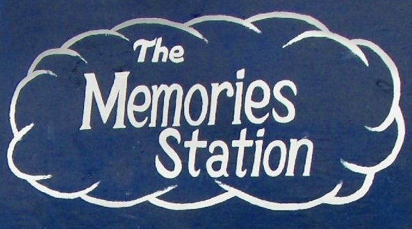
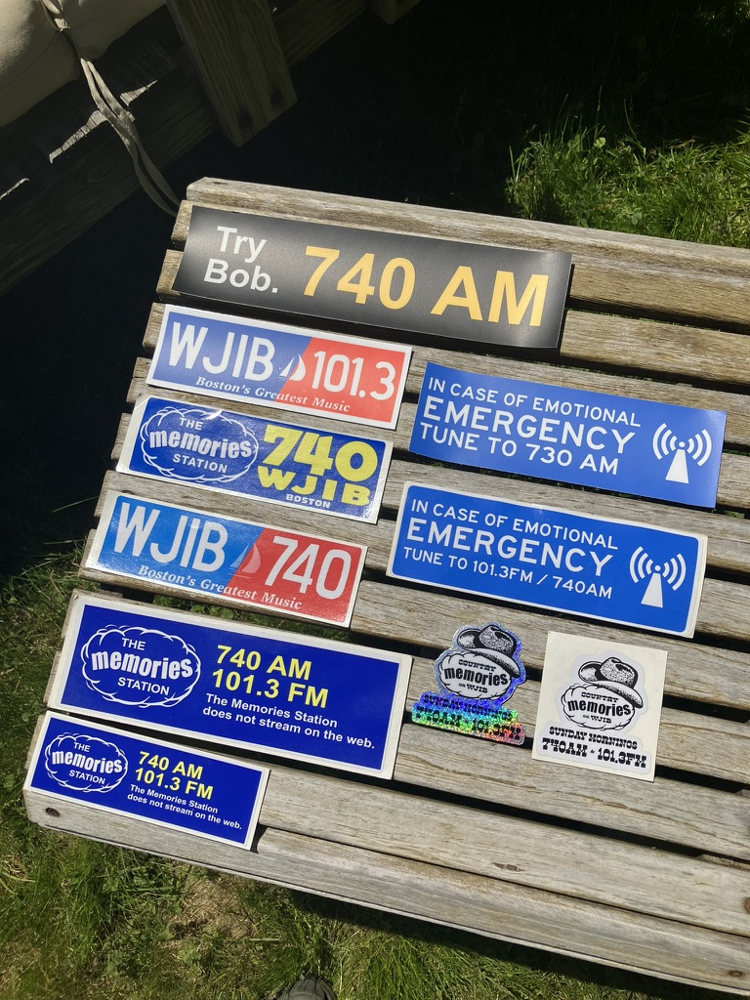
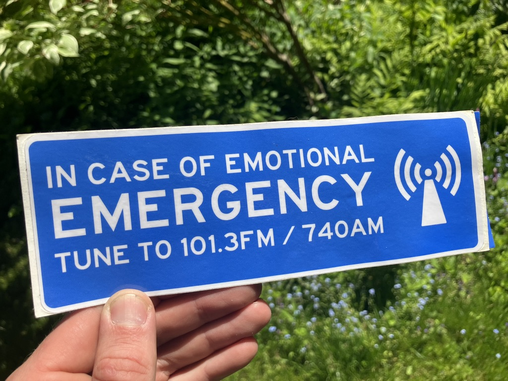

Preset 01 · Cambridge, MA
WJIB
The station that deserves a whole section of its own. My love for WJIB starts with Bob Bittner and The Memories Station.
More about Bob & WJIB ↓Good company on the dial
Favorite stations, a small obsession with WJIB, and some stickers made out of love.
01 / Presets
Preset 01 · Cambridge, MA
The station that deserves a whole section of its own. My love for WJIB starts with Bob Bittner and The Memories Station.
More about Bob & WJIB ↓More favorites and listening notes to come.
02 / Memories
Bob Bittner & WJIB

I have a bit of an obsession with WJIB. Bob Bittner's Memories Stations became the soundtrack to trips to Maine, time at home, and even our wedding. A lot of my listening became oldies and very oldies, with plenty of songs I would never have found on my own.
WJIB introduced me to “Disco Star Wars.” It sent me looking for records and compilations, saving songs, and sharing discoveries. Eventually, loving a radio station turned into making a lot of stickers for it.
This little corner of the site is for that love: Bob, the music, and the people who felt connected to it.
03 / Stickers
I've made and shared a lot of WJIB stickers. Here's a small home for the designs, the stories behind them, and where they ended up.

Sticker archive / 01
A little collection of WJIB love, laid out on a bench. Try Bob, The Memories Station, country memories, and a few variations along the way.

Sticker archive / 02
A WJIB sticker about turning to the radio when you need it. This is the design Bob spotted in Somerville.
An ongoing collection. More stickers as I dig them out.